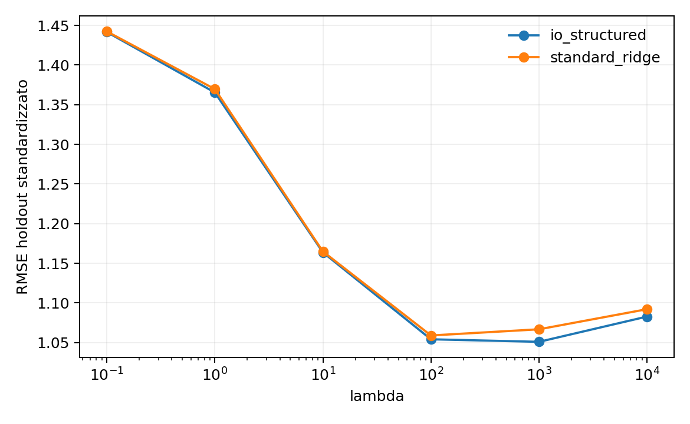
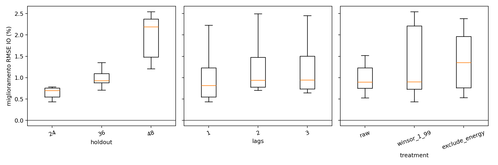
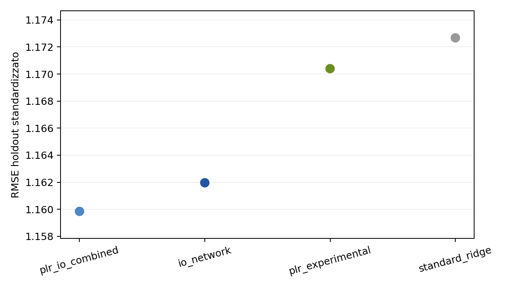

Shock settoriali e rete produttiva: percorso end-to-end della replica italiana
Dal working paper ECB al pannello mensile, al BVARX con prior Input-Output
Paolo Volterra ![]()
1 Tappa 1. La domanda iniziale
Il progetto è nato dalla lettura del working paper di Monti e Van Keirsbilck sulla trasmissione degli shock attraverso i settori e sulla dinamica dei prezzi settoriali (Monti e Van Keirsbilck 2026). La domanda di partenza era se fosse possibile trasferire all’Italia e all’area dell’euro un impianto costruito per gli Stati Uniti: un grande modello autoregressivo bayesiano nel quale i collegamenti della rete produttiva, ricavati dalle tavole Input-Output, orientano le relazioni di lungo periodo tra i prezzi dei diversi settori. L’obiettivo non era soltanto prevedere meglio l’inflazione. Era soprattutto capire se uno shock che nasce in un punto circoscritto dell’economia, per esempio nel petrolio o nei cereali, possa diventare macroeconomicamente rilevante perché si propaga lungo le filiere.
Il paper di riferimento combina trentacinque prezzi alla produzione statunitensi, variabili macroeconomiche aggregate e shock esterni. La parte metodologica più ambiziosa è il Prior for the Long Run, o PLR, di Giannone, Lenza e Primiceri (Giannone et al. 2019). La matrice Input-Output non viene imposta come una legge contabile rigida: entra nel prior e lascia ai dati la possibilità di confermare, attenuare o rifiutare le relazioni suggerite dalla rete. La replica italiana richiedeva quindi tre costruzioni distinte ma coerenti: un pannello di prezzi settoriali, una matrice tecnica italiana allineata agli stessi settori e shock identificati adatti all’area dell’euro.
| Elemento | Paper di partenza | Adattamento italiano |
|---|---|---|
| Prezzi | 35 PPI statunitensi | prezzi settoriali italiani mensili |
| Rete | tavole IO statunitensi | tavola simmetrica ISTAT |
| Shock | petrolio, cereali, Fed | petrolio, cereali, ECB |
| Modello | PLR-BVAR gerarchico | BVARX e prior IO verificabili |
flowchart TD
A[Shock esterno] --> B[Prezzi settoriali]
B --> C[Rete produttiva]
C --> D[Inflazione aggregata]
C -. informazione a priori .-> E[BVAR]2 Tappa 2. Lo scoping e la scoperta della base Input-Output già disponibile
La prima ricognizione ha mostrato che il principale rischio non era l’econometria, ma la compatibilità dei dati. I prezzi industriali italiani sono disponibili in Eurostat, mentre la classificazione e la profondità delle tavole Input-Output potevano non coincidere. La ricerca nel workspace ha però fatto emergere il progetto precedente 20260505_InOut, nel quale erano già state elaborate le tavole simmetriche ISTAT per il 2020, 2021 e 2022, insieme alla matrice dei coefficienti tecnici, all’inversa di Leontief e agli indicatori di collegamento a monte e a valle. Questa scoperta ha cambiato il percorso: non era necessario ricostruire la matrice da FIGARO o da un nuovo flusso Eurostat, ma occorreva verificare e documentare il raccordo settoriale.
La matrice tecnica scelta è quella del 2022, l’anno più recente disponibile nel progetto di origine. Essa descrive quanta produzione del settore (i) viene utilizzata direttamente per produrre un’unità del settore (j). Per non perdere la trasmissione che attraversa comparti esclusi dal pannello dei prezzi, la riduzione al nucleo osservabile non è stata fatta semplicemente cancellando righe e colonne. Sono stati conservati anche i percorsi indiretti a due passi. In questo modo un legame tra due industrie può restare visibile anche quando passa, per esempio, attraverso trasporto, commercio o altri servizi che non dispongono di un prezzo mensile utilizzabile nel modello.
| Risorsa | Stato trovato | Decisione |
|---|---|---|
| Tavole ISTAT 2020–2022 | già elaborate | riuso controllato |
| Matrice tecnica (A) | disponibile | selezione del 2022 |
| Inversa di Leontief | disponibile | riferimento strutturale |
| Percorsi via servizi | a rischio nella riduzione | conservati fino a due passi |
flowchart TD
T[Tavola simmetrica ISTAT] --> A[Matrice tecnica A]
A --> P1[Legami diretti]
A --> A2[Legami a due passi A²]
P1 --> R[Rete ridotta]
A2 --> R3 Tappa 3. Il raccordo tra branche IO e prezzi industriali
Il primo tentativo automatico di raccordo restituiva soltanto due corrispondenze su sessantatré branche. Era un falso risultato causato dalla codifica: eliminare il prefisso V dai codici della tavola IO produceva numeri privi della lettera della sezione NACE. La correzione ha associato ogni divisione alla sezione appropriata, per esempio V10_12 a C10-C12. Il raccordo verificato ha così trovato ventidue corrispondenze dirette nel nucleo industriale, dalle industrie estrattive alla manifattura, all’energia e all’acqua. La classificazione della tavola italiana e quella del PPI Eurostat erano dunque sostanzialmente compatibili.
La fonte principale dei prezzi è il dataset mensile Eurostat sts_inppd_m, mercato domestico e unità I21, cioè indice in base 2021 (Eurostat 2026c). La scelta della base è importante: la vecchia unità I15 si interrompe alla fine del 2023 e avrebbe accorciato artificialmente il campione. Per le costruzioni è stato individuato il codice corretto sts_copi_m (Eurostat 2026a). Esso misura i prezzi o costi delle nuove costruzioni residenziali e costituisce una proxy della branca F, non un prezzo esaustivo di tutte le costruzioni. È stato anche corretto un equivoco iniziale con sts_copr_m, che misura la produzione in volume e non i prezzi.
| Esito del raccordo | Branche | Quota su 63 |
|---|---|---|
| Match PPI industriale diretto | 22 | 34,9% |
| Branche non coperte dal PPI | 41 | 65,1% |
| Match del primo tentativo errato | 2 | 3,2% |
xychart-beta
title "Branche IO e raccordo al PPI"
x-axis ["Naive", "Match corretti", "Non coperte"]
y-axis "Branche" 0 --> 45
bar [2, 22, 41]4 Tappa 4. Agricoltura e cereali come prezzi osservati
Per l’agricoltura è stato costruito un downloader ISTAT dedicato. Sono state concatenate le basi 2010, 2015 e 2020 degli indici dei prezzi dei prodotti agricoli, seguendo la documentazione metodologica ufficiale (Istat 2025). Il risultato copre il periodo da gennaio 2010 a marzo 2026 e comprende sia l’indice generale dei beni e servizi prodotti in agricoltura, usato come prezzo della branca A, sia l’indice dei cereali. Quest’ultimo è utile come variabile di risposta o controllo, ma non deve essere confuso con uno shock esogeno ai cereali.
Questa distinzione è centrale. Un aumento osservato del prezzo dei cereali può riflettere cattivi raccolti, domanda mondiale, energia, cambio, guerra o aspettative. Nel lavoro statunitense lo shock agricolo viene invece identificato dalla reazione dei futures a informazioni riservate fino alla pubblicazione dei rapporti USDA. La versione corrente di questo lavoro è Adjemian e Jo (Adjemian e Jo 2025). Non è stato trovato un dataset europeo pronto che replichi tale identificazione. Per costruirlo servirebbero orari di pubblicazione affidabili dei rapporti europei o USDA e quotazioni intraday dei futures Euronext MATIF, dati che sono normalmente commerciali. La decisione finale è quindi conservativa: il prezzo dei cereali entra tra le informazioni osservabili, ma uno shock cerealicolo causale non entra nella baseline italiana.
| Serie o misura | Frequenza e periodo | Ruolo |
|---|---|---|
| Totale agricolo ISTAT | mensile, 2010-01–2026-03 | prezzo della branca A |
| Cereali ISTAT | mensile, 2010-01–2026-03 | risposta o controllo |
| Sorpresa agricola UE | non disponibile | esclusa dalla baseline causale |
flowchart TD
R[Rapporto sui raccolti] -->|notizia inattesa| F[Futures intraday]
F --> S[Shock identificato]
P[Indice mensile cereali] --> O[Prezzo osservato]
O -. non equivale a .-> S5 Tappa 5. Lo shock di politica monetaria per l’area dell’euro
Lo shock monetario statunitense del paper originale non è trasferibile direttamente all’Italia. È stato sostituito con l’Euro Area Monetary Policy Event-Study Database, EA-MPD, costruito da Altavilla e coautori (Altavilla et al. 2019; European Central Bank 2025). Il file ufficiale ECB contiene 315 riunioni del Consiglio direttivo tra il 1999 e il 2025 e separa tre finestre: comunicato, conferenza stampa ed evento monetario complessivo. Per ciascuna finestra riporta variazioni ad alta frequenza dei tassi OIS a numerose scadenze e di altre attività finanziarie.
Dal database è stata estratta una baseline riproducibile a due fattori. Il fattore target è la variazione dell’OIS a un mese nella finestra del comunicato. Il fattore path è la prima componente principale delle variazioni OIS da tre mesi a due anni nella conferenza stampa, depurata dalla componente contemporaneamente associata all’OIS a un mese e normalizzata sul segno della scadenza biennale. La costruzione cattura la distinzione tra sorpresa sulla decisione corrente e revisione del sentiero atteso dei tassi. Non pretende però di replicare integralmente la rotazione in target, timing, forward guidance e quantitative easing di Altavilla e coautori, né la separazione tra shock monetario puro e informazione della banca centrale proposta da Jarociński e Karadi (Jarociński e Karadi 2020). La letteratura di Bauer e Swanson resta inoltre un riferimento per i problemi di prevedibilità e rilevanza degli strumenti ad alta frequenza (Bauer e Swanson 2023).
| Componente | Finestra EA-MPD | Costruzione baseline |
|---|---|---|
| Target | comunicato | variazione OIS a 1 mese |
| Path | conferenza stampa | prima componente OIS 3 mesi–2 anni |
| QE | soprattutto conferenza | non separato nella baseline |
| Information shock | entrambe | non ancora identificato pienamente |
sequenceDiagram
participant C as Comunicato ECB
participant M as Mercato
participant P as Conferenza stampa
C->>M: decisione sui tassi
Note over C,M: fattore target
P->>M: sentiero e comunicazione
Note over P,M: fattore path6 Tappa 6. Dal mosaico delle fonti al pannello mensile
Le fonti sono state trasformate in un pannello mensile comune. La finestra finale va da gennaio 2012 a marzo 2026, per un totale di 171 mesi. Il pannello contiene ventiquattro prezzi settoriali: ventidue PPI industriali Eurostat, la serie agricola ISTAT e la proxy Eurostat delle costruzioni. Le serie sono state ricondotte a una frequenza comune, ordinate secondo i codici della matrice IO, controllate per duplicati e buchi e trasformate in logaritmi. Gli aggregati Eurostat con copertura discontinua sono stati esclusi quando avrebbero introdotto valori ricostruiti non osservati.
L’integrazione ha reso possibile stimare un modello coerente, ma ha anche fissato con chiarezza il suo perimetro. Non è un modello completo delle sessantatré branche italiane. È un modello mensile del nucleo produttivo per il quale esistono prezzi sufficientemente lunghi e comparabili. I servizi esclusi continuano comunque a influire sulla rete attraverso i percorsi indiretti ricavati dalla matrice tecnica completa.
| Blocco del pannello | Serie | Frequenza | Campione comune |
|---|---|---|---|
| PPI industriali Eurostat | 22 | mensile | 2012-01–2026-03 |
| Agricoltura ISTAT | 1 | mensile | 2012-01–2026-03 |
| Costruzioni Eurostat | 1 | mensile | 2012-01–2026-03 |
| Totale | 24 | mensile | 171 mesi |
xychart-beta
title "Composizione del pannello mensile"
x-axis ["Industria", "Agricoltura", "Costruzioni"]
y-axis "Serie" 0 --> 24
bar [22, 1, 1]7 Tappa 7. La baseline BVARX
La prima specificazione stimata è un BVARX sui tassi di variazione mensili dei ventiquattro prezzi. La lettera X segnala la presenza di variabili esogene, tra cui la baseline monetaria ricavata da EA-MPD. La dinamica autoregressiva viene regolarizzata con un prior di tipo Minnesota: i coefficienti dei ritardi propri e incrociati sono contratti verso zero con intensità crescente per i ritardi lontani. Questa regolarizzazione è necessaria perché il numero di parametri cresce rapidamente rispetto ai 171 mesi disponibili.
La baseline serve come punto di confronto trasparente. Consente di verificare l’intera pipeline, dalla lettura dei dati alla costruzione della matrice dei regressori, alla previsione fuori campione e alle risposte dinamiche. Le risposte allo shock monetario sono state calcolate sia per i singoli settori sia come media del pannello. In questa fase l’obiettivo principale non era rivendicare un’identificazione strutturale definitiva, ma stabilire un benchmark stabile contro il quale misurare il contributo dell’informazione Input-Output.
| Componente BVARX | Funzione |
|---|---|
| 24 prezzi endogeni | dinamica settoriale congiunta |
| Ritardi autoregressivi | persistenza e trasmissione |
| Variabili X | sorprese monetarie esterne |
| Prior Minnesota | regolarizzazione |
| Pseudo fuori campione | valutazione comparabile |
flowchart TD
Y[Prezzi ritardati] --> B[BVARX Minnesota]
X[Shock monetari] --> B
B --> F[Previsioni]
B --> I[Risposte dinamiche]8 Tappa 8. Il prior guidato dalla rete produttiva
Il passo successivo ha introdotto la matrice IO nella varianza a priori dei coefficienti incrociati. Un legame settoriale riceve una penalizzazione minore quando la matrice tecnica segnala che i due comparti sono collegati direttamente o tramite un percorso breve. I collegamenti non suggeriti dalla rete restano possibili, ma vengono contratti più fortemente. Questa formulazione è un prior network-aware: utilizza la stessa intuizione economica del paper ECB, ma non equivale ancora alla sua implementazione gerarchica completa del PLR.
Il confronto è stato eseguito su finestre pseudo-fuori-campione, usando esattamente gli stessi dati e le stesse date per il modello Minnesota e per quello IO. In tutte le 81 specificazioni della griglia di robustezza il prior IO ha ridotto l’errore quadratico medio di previsione. Il miglioramento mediano dell’RMSE è stato dello 0,93 per cento e quello medio dell’1,22 per cento. L’ordine di grandezza è contenuto, ma la stabilità del segno attraverso tutte le combinazioni è informativa: la rete produttiva aggiunge segnale previsivo senza imporre coefficienti meccanici.
| Confronto | Risultato |
|---|---|
| Specificazioni valutate | 81 |
| Specificazioni con RMSE IO migliore | 81 |
| Miglioramento mediano RMSE | 0,93% |
| Miglioramento medio RMSE | 1,22% |

Confronto tra baseline Minnesota e prior IO
9 Tappa 9. Le verifiche di robustezza
La robustezza è stata valutata modificando la forza complessiva del prior, la penalizzazione dei legami esterni alla rete, il numero di ritardi, la soglia o trasformazione della matrice e le finestre di previsione. Non è stata selezionata una sola configurazione favorevole dopo aver osservato i risultati. È stata conservata l’intera griglia di 81 confronti e sono state riassunte distribuzione, mediana e media dei guadagni. Il fatto che il modello IO risulti migliore in 81 casi su 81 è più rilevante del singolo massimo.
Questa evidenza va comunque interpretata nel suo ambito. Dimostra che l’informazione della rete migliora la previsione dei prezzi settoriali nel pannello italiano considerato. Non dimostra da sola che il meccanismo strutturale di lungo periodo del paper originale sia stato replicato, né che ogni risposta a uno shock abbia già un’interpretazione causale. La distinzione tra successo previsivo e identificazione economica è stata mantenuta in tutte le note del progetto.
| Dimensione variata | Scopo del controllo |
|---|---|
| Forza del prior | evitare una sola penalizzazione favorevole |
| Penalità fuori rete | misurare la selettività IO |
| Numero di ritardi | verificare la sensibilità dinamica |
| Trasformazione della rete | verificare soglie e pesi |
| Finestra di previsione | evitare dipendenza da un solo periodo |

Distribuzione dei risultati nelle 81 specificazioni
10 Tappa 10. Il tentativo di PLR sperimentale
Per avvicinarsi al meccanismo originale è stata costruita una versione sperimentale del Prior for the Long Run. Il target di lungo periodo è stato definito a partire da una normalizzazione di (I+A+A^2), così da rappresentare l’effetto cumulato dei collegamenti contemporanei, diretti e a due passi. La forza di questo target è stata trattata come un iperparametro da selezionare sui dati, insieme a una componente generica di somma dei coefficienti verso zero.
Il risultato è stato istruttivo proprio perché non ha confermato l’ipotesi più forte. La selezione ha posto a zero il peso del target economico (I+A+A^2). Una combinazione del prior di rete sui coefficienti con un generico prior sulla somma dei ritardi ha ottenuto il miglior RMSE, ma i dati non hanno sostenuto la specifica restrizione di lungo periodo costruita dalla matrice. Questa parte deve quindi essere chiamata PLR sperimentale, non replica completa del modello di Monti e Van Keirsbilck. Il risultato positivo riguarda il prior di rete; il target PLR economico proposto è stato rifiutato dalla procedura di selezione.
| Elemento sperimentale | Esito |
|---|---|
| Target di lungo periodo | normalizzazione di (I+A+A^2) |
| Peso selezionato del target | zero |
| Prior sulla somma dei ritardi | utile in combinazione |
| Interpretazione | PLR sperimentale, non replica completa |

Confronto tra le specificazioni PLR sperimentali
11 Tappa 11. Il problema dei servizi
L’ultima verifica ha riguardato le quarantuno branche non coperte dal PPI industriale, in particolare i servizi. Eurostat pubblica effettivamente un indice dei prezzi alla produzione dei servizi, sts_sepp_q (Eurostat 2026d), ma la frequenza è trimestrale. La copertura italiana riguarda soprattutto trasporti, informazione e comunicazione, attività immobiliari, professionali e amministrative. Per diversi aggregati la serie parte soltanto dal 2021; alcune divisioni hanno serie più lunghe dal 2006 o dal 2010; commercio, finanza, pubblica amministrazione, istruzione, sanità e numerosi servizi personali restano fuori dal campo dell’indagine.
Sono stati verificati anche i conti nazionali dettagliati nama_10_a64 (Eurostat 2026b). Essi permettono di ricavare deflatori impliciti annuali per molte branche, ma la frequenza annuale è incompatibile con il BVAR mensile. Trasformare indici trimestrali o annuali in serie mensili mediante interpolazione produrrebbe una precisione artificiale e altererebbe la dinamica che il modello dovrebbe stimare. La conclusione è quindi che i servizi non devono essere aggiunti meccanicamente al pannello corrente. Possono sostenere una futura estensione trimestrale, con un campione e un perimetro diversi, oppure essere usati come validazione strutturale annuale.
| Fonte per i servizi | Frequenza | Uso nel BVAR mensile |
|---|---|---|
sts_sepp_q |
trimestrale | non diretto |
nama_10_a64 |
annuale | validazione strutturale |
| PPI industriale | mensile | non copre i servizi |
| Estensione proposta | trimestrale | modello separato |
flowchart TD
S[Prezzi dei servizi] --> Q[SPPI trimestrali]
S --> A[Deflatori annuali]
Q --> M{BVAR mensile?}
A --> M
M -->|Interpolazione| N[Precisione artificiale]
M -->|Modello separato| E[Estensione trimestrale]12 Tappa 12. Dove siamo arrivati
Il progetto è arrivato a una pipeline riproducibile che collega fonti ufficiali, classificazioni settoriali, rete produttiva e stima bayesiana. Sono disponibili il pannello mensile integrato, gli script di download e assemblaggio, la matrice IO ridotta senza perdere i principali percorsi indiretti, una baseline BVARX, un prior network-aware, 81 verifiche di robustezza e un esperimento PLR esplicitamente distinto dalla replica completa. Il risultato empirico più solido è che la rete Input-Output migliora sistematicamente la previsione dei prezzi settoriali italiani nel campione 2012–2026. Il risultato metodologico più importante è altrettanto chiaro: il vantaggio nasce dal modo flessibile in cui la rete orienta la contrazione dei coefficienti, mentre la specifica restrizione di lungo periodo sperimentata non è sostenuta dai dati.
Restano tre frontiere. La prima è completare l’identificazione strutturale con una rotazione monetaria pienamente coerente con EA-MPD e con il trattamento degli information shocks. La seconda è integrare la serie pubblica degli oil supply news shocks di Känzig (Känzig 2021) e produrre risposte strutturali confrontabili con il paper ECB. La terza, più onerosa, è costruire uno shock europeo ai cereali con vere finestre di evento e dati futures intraday. L’estensione ai servizi richiede invece un modello trimestrale separato. Questi limiti non cancellano il risultato raggiunto: definiscono con precisione la distanza tra una prima applicazione italiana credibile e una replica strutturale integrale.
| Prodotto finale | Stato |
|---|---|
| Pannello mensile a 24 settori | completato |
| BVARX Minnesota | completato |
| Prior network-aware | completato e robusto |
| PLR economico completo | non confermato |
| Shock cereali europeo | da costruire |
| Modello trimestrale dei servizi | estensione separata |
flowchart LR
A[Dati e crosswalk] --> B[Pannello e BVARX]
B --> C[Prior IO e robustezza]
C --> D[PLR e agenda futura]